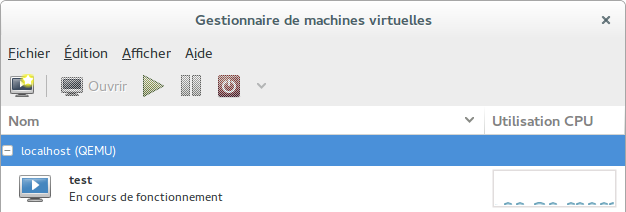

Virtualisation - libvirt+KVM, installation et configuration
dominique huguenin (dominique.huguenin@rpn.ch) -Définition
libvirt est une bibliothèque, une API, un daemon et des outils en logiciel libre de gestion de la virtualisation. Elle est notamment utilisée par KVM, Xen, VMware ESX, QEMU et d’autres solutions de virtualisation. Elle est notamment utilisée par la couche d’orchestration des hyperviseurs.[Libvirt — Wikipédia]
Installation
Installation de paquets
$ sudo apt-get install libvirt-daemon libvirt-clients virtinst virt-viewer virt-manager
Ajout du groupe libvirt aux utilisateurs
- Ajout du groupe
libvirtà l’utilisateur courant
$ sudo adduser $USER libvirt
L’utilisateur « ubuntu » appartient déjà au groupe « libvirt ».
$ id ubuntu uid=1000(ubuntu) gid=1000(ubuntu) groupes=1000(ubuntu), 4(adm),24(cdrom),27(sudo), 30(dip),46(plugdev),110(lpadmin),111(sambashare),113(libvirt)
- redémarrer le système
$ init 6
Ouvrir une nouvelle session pour prendre en compte le nouveau groupe!
Tester les commandes
idet
cat /etc/group | grep libvirtou
id $USER
- Vérification de l’installation
$ virsh -c qemu:///system list
ID Nom État
----------------------------------
Création d’une machine virtuelle avec virt-install
$ virt-install --connect qemu:///system \
-n vm1 \
-r 1024 \
--disk path=./vm1disk.img,format=raw,bus=virtio,size=4 \
-c ~/iso/debian-12.2.0-amd64-netinst.iso \
--network network=default,model=virtio\
--osinfo name=debian11
Début d'installation...
Création du fichier de stockage vm1disk.img | 4.0 GB 00:00
Création du domaine ... | 0 B 00:00
WARNING Impossible de se connecter à la console graphique : virt-viewer n'est pas
installé. Veuillez installer le paquetage « virt-viewer ».
L'installation du domaine est en cours d'installation. Vous pouvez vous reconnecter
à la console pour compléter le processus d'installation.
accès à la console de la machine virtuelle
$ virt-viewer -c qemu:///system vm1
Administration d’une machine virtuelle avec virsh
lancer la console d’administration
$ virsh
- connexion à un hôte de virtualisation distant
$ virsh -c qemu+ssh://ubuntu@armilia.labo.dhu/system ubuntu@armilia.labo.dhu's password: Bienvenue dans virsh, le terminal de virtualisation interactif. Taper : « help » pour l'aide ou « help » avec la commande « quit » pour quitter virsh # list ID Nom État ---------------------------------------------------- 2 iweb.lan.labo.dhu en cours d'exécution 3 dc.lan.labo.dhu en cours d'exécution 4 labodhu.projets en cours d'exécution
Administration d’une machine virtuelle avec virsh
Afficher l’aide
virsh # help
Liste de toutes les machines virtuelles (domaines)
virsh # list --all
ID Nom État
----------------------------------------------------
- vm1 fermé
Démarrer une machine virtuelle
virsh # start vm1
Domaine test démarré
virsh # list --all
ID Nom État
----------------------------------------------------
2 vm1 en cours d'exécution
Modification de la configuration d’une machine virtuelle
virsh # edit vm1
Description d’une VM
$ sudo cat /etc/libvirt/qemu/vm1.xml
dhu@mc0-0315-00-lab:~$ sudo cat /etc/libvirt/qemu/vm1.xml
[sudo] Mot de passe de dhu :
<!--
WARNING: THIS IS AN AUTO-GENERATED FILE. CHANGES TO IT ARE LIKELY TO BE
OVERWRITTEN AND LOST. Changes to this xml configuration should be made using:
virsh edit vm1
or other application using the libvirt API.
-->
<domain type='kvm'>
<name>vm1</name>
<uuid>27ee2d39-a6f5-426d-8f07-99ccf6fe1975</uuid>
<memory unit='KiB'>524288</memory>
<currentMemory unit='KiB'>524288</currentMemory>
<vcpu placement='static'>1</vcpu>
<os>
<type arch='x86_64' machine='pc-i440fx-xenial'>hvm</type>
<boot dev='hd'/>
</os>
<features>
<acpi/>
<apic/>
</features>
<cpu mode='custom' match='exact'>
<model fallback='allow'>Haswell</model>
</cpu>
<clock offset='utc'>
<timer name='rtc' tickpolicy='catchup'/>
<timer name='pit' tickpolicy='delay'/>
<timer name='hpet' present='no'/>
</clock>
<on_poweroff>destroy</on_poweroff>
<on_reboot>restart</on_reboot>
<on_crash>restart</on_crash>
<pm>
<suspend-to-mem enabled='no'/>
<suspend-to-disk enabled='no'/>
</pm>
<devices>
<emulator>/usr/bin/kvm-spice</emulator>
<disk type='file' device='disk'>
<driver name='qemu' type='raw'/>
<source file='/home/dhu/vm1disk.img'/>
<target dev='vda' bus='virtio'/>
<address type='pci' domain='0x0000' bus='0x00' slot='0x07' function='0x0'/>
</disk>
<disk type='file' device='cdrom'>
<driver name='qemu' type='raw'/>
<target dev='hda' bus='ide'/>
<readonly/>
<address type='drive' controller='0' bus='0' target='0' unit='0'/>
</disk>
<controller type='usb' index='0' model='ich9-ehci1'>
<address type='pci' domain='0x0000' bus='0x00'
slot='0x06' function='0x7'/>
</controller>
<controller type='usb' index='0' model='ich9-uhci1'>
<master startport='0'/>
<address type='pci' domain='0x0000' bus='0x00'
slot='0x06' function='0x0' multifunction='on'/>
</controller>
<controller type='usb' index='0' model='ich9-uhci2'>
<master startport='2'/>
<address type='pci' domain='0x0000' bus='0x00'
slot='0x06' function='0x1'/>
</controller>
<controller type='usb' index='0' model='ich9-uhci3'>
<master startport='4'/>
<address type='pci' domain='0x0000' bus='0x00'
slot='0x06' function='0x2'/>
</controller>
<controller type='pci' index='0' model='pci-root'/>
<controller type='ide' index='0'>
<address type='pci' domain='0x0000' bus='0x00'
slot='0x01' function='0x1'/>
</controller>
<controller type='virtio-serial' index='0'>
<address type='pci' domain='0x0000' bus='0x00'
slot='0x05' function='0x0'/>
</controller>
<interface type='network'>
<mac address='52:54:00:c7:ae:97'/>
<source network='default'/>
<model type='virtio'/>
<address type='pci' domain='0x0000' bus='0x00'
slot='0x03' function='0x0'/>
</interface>
<serial type='pty'>
<target port='0'/>
</serial>
<console type='pty'>
<target type='serial' port='0'/>
</console>
<channel type='spicevmc'>
<target type='virtio' name='com.redhat.spice.0'/>
<address type='virtio-serial' controller='0' bus='0' port='1'/>
</channel>
<input type='mouse' bus='ps2'/>
<input type='keyboard' bus='ps2'/>
<graphics type='spice' autoport='yes'>
<image compression='off'/>
</graphics>
<sound model='ich6'>
<address type='pci' domain='0x0000' bus='0x00'
slot='0x04' function='0x0'/>
</sound>
<video>
<model type='qxl' ram='65536' vram='65536'
vgamem='16384' heads='1'/>
<address type='pci' domain='0x0000' bus='0x00'
slot='0x02' function='0x0'/>
</video>
<redirdev bus='usb' type='spicevmc'>
</redirdev>
<redirdev bus='usb' type='spicevmc'>
</redirdev>
<memballoon model='virtio'>
<address type='pci' domain='0x0000' bus='0x00'
slot='0x08' function='0x0'/>
</memballoon>
</devices>
</domain>
Client d’administration graphique virt-manager
